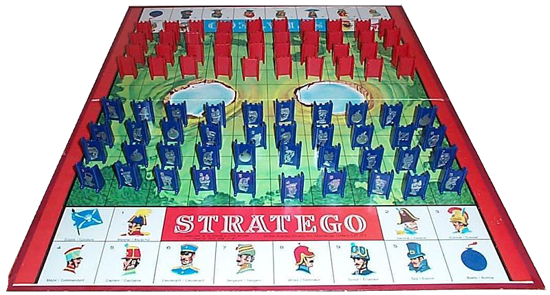

Opdrachten week 3

Ninja's
Deze week gaan we oefenen met classes in JavaScript. In onderstaande code wordt er gebruik gemaakt van een class die een nieuw ninja plaatje op een specifieke x,y positie op de pagina zet. Elke ninja heeft ook een functie hide() waarmee ze hun sneaky ninja skills kunnen activeren.
var ninja1 = new Ninja(50, 100);
var ninja2 = new Ninja(200, 200);
var ninja3 = new Ninja(300, 150);
ninja3.hide();
Maak de bijbehorende Ninja class en zorg ervoor dat ze ook een hide() functie hebben waarmee ze zichzelf kunnen hiden (opacity veranderen)
Ninja plaatje

Boter, Kaas en Eieren
Veel implementaties van boter, kaas en eieren op internet maken geen gebruik objecten, prototypes en classes. Vaak is het maar een zooitje van losse functies.
Maak je eigen versie van Boter, Kaas en eieren waarbij je de staat van het spel in objecten bijhoudt. Maak de volgende classes: TicTacToe, Player en Square. het TicTacToe object heeft 9 Square objecten en 2 Player objecten. De Square objecten houden bij welk symbool er op een vakje staat.
Zet alle functionaliteit van het spel in de 'methode' functies van de objecten.
Kruisje Rondje
Ninja 2
Breid het Ninja programma uit zodat elke Ninja overerft van een Human. Elke Ninja kan een Katana of een DragonStar instantie hebben, die allebei overerven van Weapon. Verzin voor elk prototype object functies die daarbij horen (zoals walk(), strike(), throw(), use(). Implementeer ze met een simpele console.log()). Test je programma door verschillende ninja's en wapens te maken en ze die te laten gebruiken.

Huiswerk
Een van de eisen van de eindopdracht is om de logica van het spel onder te brengen in objecten. Bedenk welke klassen je nodig hebt om een spelletje Stratego te kunnen spelen (denk bijvoorbeeld aan Game, Board, Piece en Square) en maak deze aan in jouw Stratego project. Geef deze objecten via hun prototype object een paar handige methodes zodat je bijvoorbeeld een speelstuk kan verplaatsen of bepalen of een speelstuk op een bepaald vakje mag staan.
{kind=link}
{kind=link}
{kind=link}